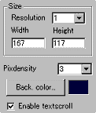
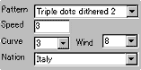

|
This applet visualises a flag waving in a windy
condition. It currently supports 34 nation flags.
[For more technical
information about the available parameters, click here.]
Most parameters are self-explanatory and you can
always see brief description of each parameter by moving the mouse
pointer over the wizard.
 |
First of all, define the applet size and its
resolution "Width", "Height",
and "Resolution". Resolution works as a stretcher
value for the internally calculated image. If you want high
quality result, always set this to one.
|
|
The background colour can be defined using
an intuitive Windows default colour palette.
Then you decide if textscroll function is
enabled by checking "Enable textscroll" box.
"Pixdensity" parameter relates
to the render of a flag like other parameters below. It in
fact decides the distance in pixel between plotted points
of a flag.
|
 |
Choose your desired
nation flag from the list. Currently, the applet supports 34
nations. |
|
1 Italy
2 Spain
3 France
4 Ireland
5 Austria
6 Germany
7 Netherlands
8 Belgium
9 Luxembourg
10 Sweden
11 Norway
12 Iceland
|
13 Greenland
14 Denmark
15 Finland
16 Poland
17 Hungary
18 Switzerland
19 South Africa
20 Russia
21 Japan
22 Israel
23 Greece
24 USA |
25 Canada
26 Australia
27 New Zealand
28 United Kingdom
29 Argentina
30 Peru'
31 Venezuela
32 Mexico
33 Brazil
34 Colombia |
Next, you select render type from the "Pattern"
list. We have provided 8 different types:
1 = small dots
2 = double dots
3 = stars
4 = stars with centre hole
5 = triangles
6 = triple dots
7 = triple dots dithered 1
8 = triple dots dithered 2 |
Once you have chosen the render type, next you configure
the rest of the three parameters which affect how the flag waves.
"Wind" -- wind intensity; from
0 (no wind) to 8 (typhoon)
"Curve" - curve level of waving from 1 to 5 (biggest).
"Speed"- speed of waving.
Although I explained "Speed" parameter
was the speed of waving of the flag, it's not really precise. All
three parameters interact one after another and the result is always
rather complex. So, you need to experiment with these values by
yourself and find the most appropriate combination for your desired
effect.
Proceed to the textscroll
menu if you have checked the textscroll box; otherwise go to
the expert menu.
|